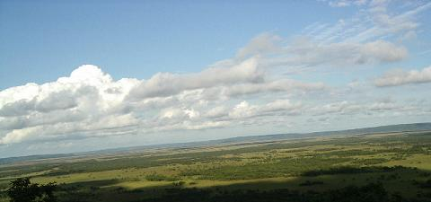

続きを見に行く
続きを見に行く

台風１５号が太平洋側を北上しており、前日からダンナに
「さすがの晴れ女も台風には勝てんだろうなあ」
と言われつつも、
「ふふんだ…私は悪運の強い晴れ女だわい！」
と豪語していたにもかかわらず朝から雨が降ったりやんだり…（；；
今回の旅行は三人で申込み一人７７８００円ということだったのですが、一人キャンセルとなり その旨旅行社へ連絡しますと、５０００円（以下の金額全て一人分）増しになるとのことで、それはちょっと痛いなぁ…
といって、ここで私達もキャンセルすれば三倍の１５５６０円というお金を捨てることになるし…と、受話器を持ったまま悩んでおりますと、なんと「相部屋」ということもできるそうで、４０００円バックになるとのことでそれに決めました。
金額については行ってきたばかりの時でなければ書けませんので、キャンセル＆相部屋などという経験ははじめてのことでもあり、何かのご参考になれば…ということで細かく記してみました。
とまあ、そんなことで今回は初めてＭさんとの二人旅行であります。
１２時４５分というちょうど昼食タイムの出発なので、機内で食べるためのお弁当を買い求め、待合室で話していると、何度も空港には来ているはずなのにはじめて耳にするアナウンスを聞いて、思わず顔を見合わせてしまいました。（｀Δ｀）（’。’）
どこやら行きが定員を超えてしまったので他の便に変わってくれる人はいませんか？というような内容だったと思うのですが、
「そんなことあるの？」
と、あらためてしっかり聞いてみると、謝礼に一万円を差し上げますという言葉でアナウンスが終わったかと思う間もなく、
「ご協力ありがとうございました」
と、受付終了を知らせるアナウンスが流れました。
「時間のある一人旅なら、私だって一万円の一声で即立ち上がるけど…」
あっという間の珍しい出来事を笑って話していたのですが、実は 帰りにも同じことがありまして、ひょっとしたら私達の乗っていた便のことだったのかもしれません。(*^_^*)
今回のツアーは２２名の催行だそうで、その内三名の方がお一人で参加されているとか…
そのうちの何方かが私達と相部屋ということになりますが、さてさてどんな方なのかそれも楽しみのひとつです。
搭乗券の席番は１６番になっていましたのでまた翼のところかな？と話しながら通路を歩いていくと、ラッキーなことに翼よりかなり手前で、飛び立ってベルトが外せるようになるが早いかお弁当を広げ、そういえば北海道へ行く時はいつもお弁当を食べているなあ…などと考えながらもぐもぐ…
２５年前に家族で行った時は車（しかも軽！）で、夕方の４時にこちらを出てダンナ一人の運転で夜中も走り続けて、２４時間後くらいに岩手の親戚に到着し、次の日は宮古で遊覧船に乗ったりしてゆっくりしましたが、お昼過ぎからまたもや走り続けて、暗くなった頃にやっと八戸に着き、９時頃出航のギュウギュウ詰めのフェリーに乗って、早朝 やっと苫小牧へ…
途中 日高でサラブレットの牧場を見学したり、襟裳岬を歩いたりもしましたが、十勝の親戚に到着したのは夕方でした（＾_＾；
文字にするだけでもこんなにかかったものが、飛行機では(どこにも立ち寄れませんが）釧路までたったの１時間４５分で着いちゃいます。
釧路はお天気もよく、Ｔシャツに袖無しのパーカーといういでたちでしたが、そんなに寒いということもなく丁度よかったくらいです。
空港から出ると早速釧路市湿原展望台へ向けて出発です。
約２万６千８６１ヘクタールの「水に浮く草原」といわれる釧路湿原にはいくつかの展望台があるようですが、空港から一番近いのがこの釧路市湿原展望台のようで、周辺には２．５Kmの木道と枝分かれした延長木道があり、ネイチャーガイドさんから注意事項などの説明を受け、湿原内に作られた小径に入りますが、蚊の多いことには閉口しました。
こちらで見かける黒い小さなヤブ蚊とは違い、赤くて大きいものがわんわんと寄ってきますので、立ち止まって説明を聞く間もみんなまるで盆踊りでも踊っているかのように手足を動かして蚊を追っています。
洋服の上からでも容赦なく刺してきますのでかなり強敵です。
これから湿原へ行こうと思っていらっしゃる方は、是非
虫除けスプレーと虫刺されの薬を持参されることをお勧めします。
湿原の博物館になっている主展望台は「いざない広場」と呼ばれ、そこからクマザサが生い茂る中に道ができており、各所に設けられた展望台を巡りながら木道や階段、吊り橋などを通って最初の広場に戻ってこられるようになっているのですが、ガイドさんの後について約９０分の散策タイムを与えられた私達のコースはその半分も廻らないもので、ここまで来たからには一周したいものだと考えるのは誰しも同じですが、歩き始めてみるとそれはもう丁寧に説明をしてくださり、これでは半分も行けないはずだと納得しました。
１km先の「サテライト展望台」まで行くのですが、道々立ち止まってはトリカブトだのコクワの木だの珍しい草木の説明がされ、盆踊りの稽古に余念がない私はあまり真面目な生徒ではありませんでしたが、その努力の甲斐あってか三日間湿原の吸血蚊にはエサを与えることなく、♪アラエッサッサァー…

これはサテライト展望台からの眺めですが、手前半分は雲の影になってしまって涙ながらのカットとなり、湿原というよりは空が主役のようになってしまいました。(^_^;)
ここまでは車いすでも行くことができるそうで、足場もしっかりしており、写真で見ていたような木道はなかったような気がします。
広々とした展望台は車いすでも自由に動き回ることができそうでした。
このサテライト展望台からは北側に広がっている湿原を西側から見るかたちとなり、翌日には遠くに見える東側の山並みのどこかからこの展望台のある高台を背景に湿原を見渡すことになります。
この湿原の中程に道路を造ったのだそうですが、陥没が激しく、何度補修をしても何処かここかが沈んでしまうので中止になってしまったそうです。
三千年前は海であったと言われる広大な自然世界は、沈黙のうちにも人々の侵入を拒み、あるがままの姿をさらけ出して何かを語りかけんとしているかのようです。
西側に比べて東側の方が地面が低くなっているそうで、水は東に向かって流れていると説明を受けましたが、こちら側からはあのくねくねと蛇行する釧路川の流れは見ることはできませんでした。(>_<)
湿原から釧路の町まではバスで３０分ほど行ったところにあり、日本で一番最初に彫刻を橋の上に作ったといわれる「幣舞（ぬさまい）橋」の近くにホテルがありました。
バスの中で部屋割りの案内があり、同室になる方を添乗員さんから教えて頂き、かたちなりの挨拶はしましたが、ホテルに到着して部屋のキーを受け取ってみると、二人揃ってなんていう名前の方だったのか、どんな感じの女性だったのかとんと覚えておらず、ロビーに最後まで残っていた人がそうだろうということで、あらためてご挨拶して部屋へ向かいました。
６階のその部屋は、普通のシティーホテルの二人部屋に予備のベッドがひとつ余分に置いてあるということで、歩くところしか空間がなく、何をするにもベッドの上でしなければならないような状況です。
で、私達がその部屋に入って一番最初にしたことは、ベッドの位置決めのじゃんけんでした。(^_^;)
真っ先に負けた私は窓際の簡易ベッドと決まり、ベッドと窓の間に置いてある細長い机の上にお茶のセットがありましたので、早速お湯を沸かし、
「粗茶でございますが…」
と、これを皮切りにそれぞれに名前を教え合いましたが、その時は覚えたつもりが「よくある苗字」だったということしか思い出せず、二度も聞くわけにはいかないので、私は最後の最後まで彼女の名前を呼ぶことはありませんでした。(-_-;)
さて、夕食はといいますと「炉端焼き」と旅のしおりに書いてあり、私達二人は炉端焼きなるものをはじめて食べるとあって、カウンターのようなところがあって目の前で焼いてくれるのかな？なんて期待していたのですが、指定された場所へ行ってみますと、結婚披露宴などに使う部屋をアコーディオンカーテンで仕切ったような、絨毯を敷き詰めた部屋に丸テーブルがいくつか置いてあり、その一つに私達二人の席が用意されていました。
「こんなところで炉端焼きって、どこで焼くんだろうね？」
「目の前で焼いてくれるんなら、何処かにそんなものが用意されてそうなもんだよね？」
と、辺りをキョロキョロと見回しながら、ままごとのような小さな器に上品に盛りつけたいかのうに和えとか刺身や漬け物などをつまんでおりますと…やがて、３０㎝くらいの大皿があちこちのテーブルに運ばれはじめ、私達のテーブルにもそれが運ばれてきた時には…
目が点になりました。（・・）
そりゃあ、確かに北海道で食べるこれは美味しいです!!
「でも、これはないんじゃないの？」
私のようにずぼらな人間でも、ボソボソ…(^_^;)
それともなに？
この地方では、こういう食べ方が普通なの？(-_-;)
今、これを読んでいるあなた!
何をご想像されました？
（ちょっと知りたいかぼちゃです＾＾；）
てなことで、この続きは次回への持ち越しということで…
うそです。（ごめんなさい）
そりゃあね…うちの近所のスーパーで特価で売っている百円のあれと同じだとは言いませんがね、いくら美味しいからと言って
ホッケの干物丸ごと一匹
はないんじゃない？(^_^;)
そりゃ美味しいけどさ…（もしゃ もしゃ）
やっぱりこういうものは…（グビ！）
4/1くらいが適当じゃない？（もぐもぐ）
てなことで、頑張って食べましたがそんなに食べられる物ではなく、申し訳のように大皿の端っこに乗っていたホタテの焼き物は平らげましたが、ホッケは「もったいない」と思いつつも半分も食べられずに残し、次にテーブルに運ばれた来たツブ貝の卵とじ風のものに箸を延ばし、大さじ一杯分くらいのいくらが乗っかったお茶碗一杯の雑炊が出てきてお終いでした。
まあ、確かにアレを見ただけでお腹がいっぱいになりましたけど、何となく納得がいかないお腹をなだめながら、近くの席で他のグループと食事を済ませた相部屋のYさんと同行して、夜の釧路街に出ることになりました。
昼間のままの格好ではちょっと寒いようでしたので、それぞれにジャケットやウィンドブレーカーなどを一枚着込んで、ホテルで聞いてきた「ＭＯＯ」というグルメ、ショッピング、レジャーが楽しめる観光施設を目指しましたが、そこはもう終わっており、隣の全面ガラス張りの温室になっている「ＥＧＧ」というところに入ってみますと、オールシーズン緑地ということで、名古屋では普通に庭に植えられている柊南天とかおおむらさきというツツジだの椿だのが植わっており、ちょっとした川のようなものが作ってあったり、通路だけが造られた二階からも見下ろすことができ、冬は雪に埋もれてしまう北海道ではこんなスペースも必要なのかもしれないと思いました。
その温室から釧路川の川岸になっている外へ出られるようになっていましたが、時間も遅いせいか出入り口はロックされており、外からも行けるようになっているようなので、幣舞橋のたもとにある階段を下りていきますと、公園のような通路のようなスペースになっており、閉館になっていた隣の「ＭＯＯ」まで続いているようで、色とりどりの丸い提灯が並んでいるのが見えました。
釧路は炉ばたの発祥地だそうで、岸壁炉ばたというものが６～９月までＭＯＯのエプロンでできるようになっており、もっと早い時間であれば、あの提灯の下にテーブルや椅子が出ていて、新鮮な海と山の幸を炭火で焼いている匂いだけが私達の鼻にも届いていたことでしょう。
また、釧路川の河口になっているここからは港湾遊覧船も発着するそうですが、私達が川を覗いてみた時には水面から足元まで５０～６０㎝くらいしかありませんでしたので、後日地震によって押し寄せた津波によってかなりの被害が出たのではないかと思われます。
幣舞橋を渡り切ったところでＵターンしましたが、橋の上の「四季の像」はひとつひとつの作者が違い、記念写真の人気スポットだそうです。
橋を戻って今度は川に沿って反対側へ歩きますと、「栄町」という町があり、町の名前からしてもここが一番の繁華街だろうと思われ、適当に賑やかそうな道を選んで歩いてみますと、飲食のできるお店だけが開いているといった感じで、なるほど…炉ばたの店が多かったです。
お風呂は部屋のものを使うように聞いていたので、シティーホテルだから大浴場がないのかな？と思っていたら、翌日になって修学旅行生が来ていて使えなかっただけだと知り、ちょっとガッカリでした。
１２時頃ベッドに入って、うとうととしかけた頃にはっ！と携帯電話のことを思い出し、一日に一度くらいは見るように言われていたにもかかわらず、名古屋空港で電源を切ったまま持ち歩いており、家にいる時には「不携帯電話」と呼ばれている私の携帯は、持ち歩いていてもこんな事か…と、我ながら呆れます。(^_^;)
明日はちゃんと生ゴミを捨てて貰うようにメールしなくては…
作成:2004-09-29
コメントはこちら
続きを見に行く